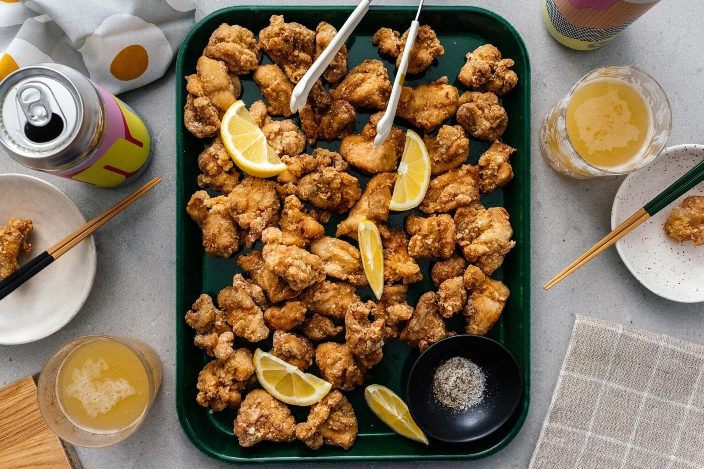

Chicken Karaage: Japanese Fried Chicken
Bite sized, super juicy, intensely flavorful, with a crispy, cracker-y crunch.
INGREDIENTS
- 1 lb boneless skinless chicken thighs cut into 1" cubes
- 2 tbsp soy sauce
- 1 tbsp sake
- 1 tsp sugar
- 1 tbsp ginger minced
- 2 cloves garlic minced
- 1/2 cup potato starch
- 1/4 cup cornstarch
- High heat oil for deep frying
INSTRUCTIONS
- In a bowl, marinate the chicken in the soy sauce, sake, sugar, ginger, and garlic for 30 minutes at
temperature, in a slightly cool spot. Letting the chicken rest at room temp means that the chicken won’t
drop the temperature of the oil, which means that it’ll cook up crispier. Also, it’ll cook faster than
if you cook it cold from the fridge. If you are air frying or baking, add a 1/2 tablespoon oil to the
marinade.
- Place the potato starch and cornstarch in a bowl and, working in batches, toss and coat several pieces
of chicken, making sure they are well coated. Alternatively, put the potato and cornstarch in a bag or
container, add the chicken, and shake to coat. The chicken should be well coated and look fairly dry.
- Deep Fry Instructions (see notes for air fried and oven baking instructions)
- Prepare a wire cooling rack over a paper towel lined rimmed baking sheet. Heat up 2 - 2.5 inches of oil
in a deep heavy bottomed pot until it reaches 325°F. It doesn’t need to be too deep, it depends on the
size of your chicken. Use a pair of tongs to gently add a couple of pieces of chicken to the hot oil,
being careful not to overcrowd. Fry in batches until lightly golden, about 1 1/2 minutes.
- Remove from the oil and let rest on your prepared wire rack. Repeat with the remaining chicken until all
of it has been fried once.
- Turn the heat up to 350°F and fry the chicken a second time around until deeply golden and crispy,
another 1-2 minutes.
- Enjoy as soon as possible!